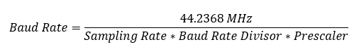

Serial - Setup
Serial - Setup — Setup of parameters for serial ports
Description
This block is part of the Serial driver blockset for the IO50x and IO581 modules. For each of these modules in your target machine there must be exactly one Setup block in your model.
The Setup block dialog box allows all of the supported Serial modules to be specified and configured. This block therefore has an impact on the other driver blocks (Serial Write and Serial Read).
Block Parameters
- Module Type
Select the type of your I/O Module installed in your target machine.
- Module ID
This ID defines the link to the corresponding Setup block
- PCI Slot (-1: auto-search)
There are two approaches for mapping this block to a specific I/O module installed in your target machine. All modules of the same type must be configured using the same method.
Auto-Search: with the default value -1 the I/O module will be automatically located in the target machine. If you have multiple modules of the same kind, the Module ID defines which module is associated with this block. To see how each I/O module maps to a Module ID, use this Speedgoat API:
speedgoat.getIoInterfaces("TargetName", "mySpeedgoat")Explicit Addressing: to explicitly define the logical address of the I/O module in the target machine, you can provide the PCI bus and slot numbers as a vector: [bus, slot]. To determine these numbers, run the following command in the MATLAB command window:
speedgoat.getIoInterfaces("TargetName", "mySpeedgoat", "Advanced", true)Note that the PCI address can change whenever an I/O module is added or removed – usually, auto-search is the best option.
- Oscillator
Select the hardware oscillator frequency that matches your module. The baud rate calculation in the block mask is based on the selected frequency. If the wrong frequency is selected, an error will appear in the target log at the start of the real-time application. For the IO581 I/O module, the frequency is fixed and cannot be changed.
- Transceiver Setup
Configuration of the transceiver for each channel. It represents the physical layer of the serial protocol. Options are:
RS232
RS422
RS422 Multidrop[4]
RS485 Half-Duplex
RS485 Full-Duplex
![[Note]](images/note.png)
Note Max. baud rate for RS232 mode is 921.6 kb/s.
- Enable Tx Termination Resistor [4]
Terminate Tx line with a 120Ω termination resistor (this setting is ignored in RS232 mode).
- Enable Rx Termination Resistor [4]
Terminate Rx line with a 120Ω termination resistor (this setting is ignored in RS232 mode).
- Enable Tx Message Monitoring
This checkbox can be used to enable/disable the reception of an echo of the own data transmission in the RS485 Half-Duplex mode.
- Auto Turn Around
The auto turn around is enabled per default for the RS485 Half-Duplex mode. In the RS485 Full-Duplex mode it can be enabled if required. In the RS485 mode, where the transmitters and receivers use the same differential pair of wires, you can only enable one transmitter at a time. Therefore the RTS output is routed to the enable input of the RS485 transmitter.
- Turn Around Delay
The UART automatically asserts RTS when there are characters in the transmit FIFO. It de-asserts RTS when the transmit FIFO empties and the RS485 turnaround default delay of 0 to 15 bit time periods elapses. The transmitter output goes tristate (high impedance) when disabled, which allows another device to transmit.
- Use Standard Baud Rates (16x, no prescaling)
Check this box if you want to use a standard baud rate
- Standard Baud Rate
Select the baud rate from a list of standard baud rates
- Baud Rate Divisor
The non-standard baud rate is determined by the following formula: [5]

The prescaler can be set using the Prescaler parameter. The prescaler default is "None" which equals to "x1". The sampling rate can be either 8 or 16. The divisor must fall withing range of 1 - 65535. Note that the divisor must be an integer for the I/O modules IO503,IO504 and IO505.
- Sampling Rate
The sampling rate can be set to 8x or 16x (normal operation). Transmit and receive data rates will double by selecting 8x sample rate.
- Prescaler
Sets the Prescale value used to calculate a non-standard baud rate. "None" means the prescaler equals times one (1x). Selecting the 4x from the dropdown list sets it to times four.
- Baud Rate
If non-standard baud rate mode is selected, this field shows the calculated baud rate using the parameters from above and the respective oscillator frequency of the module.
- Parity
Parity is a method for detecting errors during transmission. Options are:
None
Even
Odd
Mark
Space
- Data Bits
The number of data bits for each character. Options are: 5, 6, 7 or 8.
- Stop Bits
The number of stop bits sent at the end of every character. Options are: 1 or 2.
- Transmit FIFO Interrupt Level
This parameter specifies the number of characters left in the transmit FIFO before an interrupt occurs.
- Receive FIFO Interrupt Level
This parameter specifies the number of characters in the receive FIFO before an interrupt occurs. Receive interrupts occur at least as often as this parameter specifies. If a gap of at least 4 character periods occurs in a data stream, the UART requests an interrupt for the receiver.
- Handshake
Select if hardware or software handshake should be used. Flow control is used to prevent data overrun to the local receiver FIFO and remote receiver FIFO. Hardware handshake can only be used in RS232 mode. If software flow control is selected, the XOFF character is transmitted approximately two character time periods after the RX FIFO level has reached the RX trigger level. The XON character is transmitted when the RX FIFO level falls below the RX trigger level. If RTS Hysteresis is not 0, the XON character gets transmitted when the RX FIFO level falls below the RX trigger level minus the selected hysteresis. The following modes are available for flow control:
RTS/CTS: Use the RTS/CTS pins for flow control
Tx XON/XOFF: Only transmit flow control characters
Rx XON/XOFF: Only receive flow control characters
Tx/Rx XON/XOFF: Transmit and receive flow control characters
- RTS Hysteresis
Select the amount of characters at which RTS should be de/re-asserted. Transmission is re-asserted if the RX FIFO level is below the RX FIFO trigger level minus the selected hysteresis. It de-asserts if the RX FIFO level is above the RX FIFO trigger level plus the selected hysteresis.
- XON Character
This parameter defines the XON character. If two characters are specified they are concatenated into two sequential characters.
- XOFF Character
This parameter defines the XOFF character. If two characters are specified they are concatenated into two sequential characters.
- Transmit Software FIFO Size
The size of the software FIFO used to buffer transmitted characters. For each I/O module, a minimum buffer size must be set. Refer to the serial usage notes for more information about the FIFO buffer sizes. This parameter also defines the input port width of the corresponding write block.
- Receive Software FIFO Size
The size of the software FIFO to buffer characters between interrupt service and periodic execution. For each I/O module, a minimum buffer size must be set. Refer to the serial usage notes for more information about the FIFO buffer sizes. This parameter also defines the output port width of the corresponding read block.